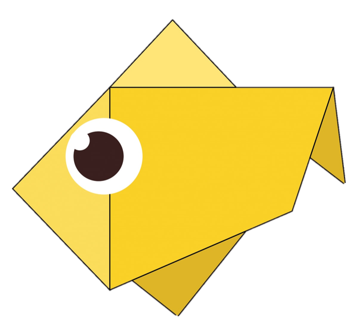
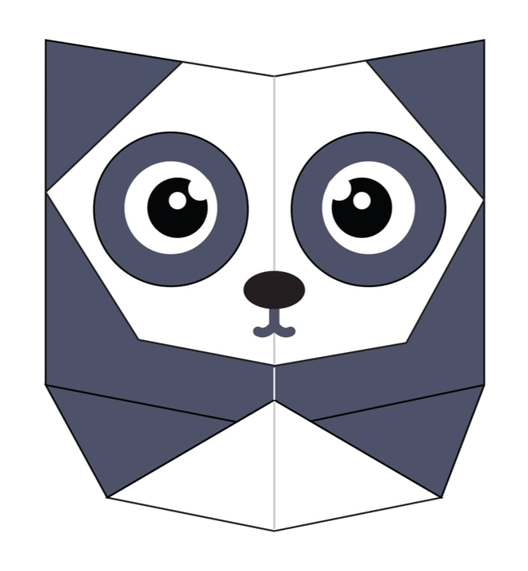

CAMEL! 🐪

There are two types of camels: one humped camels and two humped camels
Camels live on average for 40 to 50 years
Camels can completely shut their nostrils during sandstorms 😲
Click to Learn this Camel Origami
DOG! 🐕
Their sense of smell is at least 40x better than humans
Dogs can sniff at the same time as breathing
Dogs also dream, like us 😱
Click to Learn this Dog Origami
FISH! 🐟
Fish have impressive memories
There are over 30000 known species of fish
Fish have gills that helps them extract oxygen from the water around them 🤯
Click to Learn this Fish Origami
PANDA! 🐼
They spend a lot of their day eating 😳
Prehistoric pandas lived up to 2 million years ago
Pandas have 6 toes to grasp bamboo
Click to Learn this Panda Origami
BABY PENGUIN! 🐧

Penguins lost the ability to fly millions of years ago
No penguins live at the North Pole 😱
Penguins spend around half their time in water and the other half on land
Click to Learn this Penguin Origami
PIGEON! 🐦